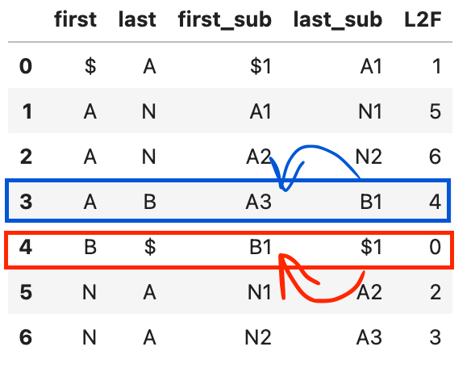

from collections import Counter
import pandas as pdBurrows-Wheeler Transform in Python
Bioinformatics
BWT
data structure
Burrows-Wheeler Transform is a method used for pattern matching problem. We can use it to find all instances of substrings in the database that matches our query sequence.
I recently learnt about Burrows-Wheeler Transform from the Advanced Data Structure playlist by Niema Moshiri. In this notebook, I tried to implement it using python.
db = 'BANANA$'Extracting Burrow-Wheeler Transform (BWT)
rotations = []
rotations.append(db)
s = db
for i in range(len(db)-1):
s = s[-1] + s[:-1]
rotations.append(s)pd.DataFrame({'rotations':rotations, 'sorted_rotations': sorted(rotations)})| rotations | sorted_rotations | |
|---|---|---|
| 0 | BANANA$ | $BANANA |
| 1 | $BANANA | A$BANAN |
| 2 | A$BANAN | ANA$BAN |
| 3 | NA$BANA | ANANA$B |
| 4 | ANA$BAN | BANANA$ |
| 5 | NANA$BA | NA$BANA |
| 6 | ANANA$B | NANA$BA |
The Burrow - Wheeler Transform (BWT) is the last characters from the list of sorted rotations.
BWT = [s[-1] for s in sorted(rotations)]
BWT['A', 'N', 'N', 'B', '$', 'A', 'A']Inverting the Burrow-Wheeler Transform (BWT)
Burrow-Wheeler transform is reversable. Here’s how to construct the original string from BWT:
Step 1: List out BWT as last column and sorted list of the original database as first column
df = pd.DataFrame({'first': sorted(db), 'last': BWT})
df| first | last | |
|---|---|---|
| 0 | $ | A |
| 1 | A | N |
| 2 | A | N |
| 3 | A | B |
| 4 | B | $ |
| 5 | N | A |
| 6 | N | A |
Step 2: Add the number of times we’ve seen the character at that point as subscript
### adding subscript for first column (sorted original database)
dbcounter = Counter(db)
sorted_db_subs = []
for c in sorted(db, reverse=True):
sorted_db_subs.append(c + str(dbcounter[c]))
dbcounter[c] = dbcounter[c] - 1
sorted_db_subs = sorted(sorted_db_subs)
sorted_db_subs['$1', 'A1', 'A2', 'A3', 'B1', 'N1', 'N2']### adding subscript for last column (BWT)
dbcounter = Counter(BWT)
print(dbcounter)
bwt_subs = []
for c in BWT[::-1]:
bwt_subs.append(c + str(dbcounter[c]))
dbcounter[c] = dbcounter[c] - 1
bwt_subs = bwt_subs[::-1]Counter({'A': 3, 'N': 2, 'B': 1, '$': 1})df['first_sub'] = sorted_db_subs
df['last_sub'] = bwt_subsdf| first | last | first_sub | last_sub | |
|---|---|---|---|---|
| 0 | $ | A | $1 | A1 |
| 1 | A | N | A1 | N1 |
| 2 | A | N | A2 | N2 |
| 3 | A | B | A3 | B1 |
| 4 | B | $ | B1 | $1 |
| 5 | N | A | N1 | A2 |
| 6 | N | A | N2 | A3 |
Step 3: Add last-to-first mapping
MAPPING = {k:v for k,v in zip(df['first_sub'].values, range(len(df)))}
MAPPING{'$1': 0, 'A1': 1, 'A2': 2, 'A3': 3, 'B1': 4, 'N1': 5, 'N2': 6}df['L2F'] = df.apply(lambda row: MAPPING[row['last_sub']],axis=1)
df| first | last | first_sub | last_sub | L2F | |
|---|---|---|---|---|---|
| 0 | $ | A | $1 | A1 | 1 |
| 1 | A | N | A1 | N1 | 5 |
| 2 | A | N | A2 | N2 | 6 |
| 3 | A | B | A3 | B1 | 4 |
| 4 | B | $ | B1 | $1 | 0 |
| 5 | N | A | N1 | A2 | 2 |
| 6 | N | A | N2 | A3 | 3 |
We can reconstruct our original database string from this preprocessed data. Here’s how:
We can start with the null termination character we added, we know it is in the first row, first_sub column, so we retrieve that first.
Remember that as part of our preprocessing steps we do rotations of the original database string, and from that rotations we save the first column in first_sub and the last column in last_sub? So this tells us that first_sub and last_sub are connected: last_sub character comes before first_sub character.

To illustrate: 1. Start with null termination $1.
1. Find null termination $1 in last_sub (row 4). The next character follows it is the corresponding character in first_sub column (red arrow). Now the reconstructed string is $1 B1.
1. Find the last added character in the last_sub. Add its corresponding first_sub to the reconstructed string (blue arrow). Now the reconstructed string is $1 B1 A3.
1. Continue building the reconstructed string until we reached the character last_sub of first row. Why first row? because we started the reconstructed string with $1 – which is also the first_sub character in our preprocessed data’s first row.
reconstruct = [df.loc[0,'first_sub']]
while reconstruct[-1] != df.loc[0,'last_sub']:
last_char = reconstruct[-1]
next_index = df[df['last_sub']==last_char].index.values[0]
next_char = df.loc[df.index==next_index, 'first_sub'].values[0]
reconstruct.append(next_char)
reconstructed_str_sub = ' '.join(reconstruct)
reconstructed_str = ''.join([c[0] for c in reconstruct])
print('Reconstructed database string (with subscript):',reconstructed_str_sub)
print('Reconstructed database string:', reconstructed_str)
print('Original database string:', db)Reconstructed database string (with subscript): $1 B1 A3 N2 A2 N1 A1
Reconstructed database string: $BANANA
Original database string: BANANA$We then move the null termination character to the end of the string and we can get back the original database.
Pattern Matching using BWT
Let’s try to do pattern matching using the preprocessed BWT from our toy database.
query = 'AN'
ok_range = range(len(df))
for c in query[::-1]:
top = df.loc[df.index.isin(ok_range) & (df['last'] == c), 'L2F'].head(1).values[0]
bottom = df.loc[df.index.isin(ok_range) & (df['last'] == c), 'L2F'].tail(1).values[0]
ok_range = range(top, bottom+1)
print('Found character:', c, '\n', df[df.index.isin(ok_range)])
print('-'*40)
# exact match to query sequence is located between the top:bottom position of the preprocessed database
query_result = df.loc[df.index.isin(ok_range), 'first_sub'].values
print(f'Query "{query}" found in database sequence starting from:', query_result)
print('-'*40)Found character: N
first last first_sub last_sub L2F
5 N A N1 A2 2
6 N A N2 A3 3
----------------------------------------
Found character: A
first last first_sub last_sub L2F
2 A N A2 N2 6
3 A B A3 B1 4
----------------------------------------
Query "AN" found in database sequence starting from: ['A2' 'A3']
----------------------------------------The query_result does indeed match.
- $1 B1 A3 N2 A2 N1 A1
- $1 B1 A3 N2 A2 N1 A1
Let’s make this into a function and try another example.
def reconstruct_db(df:pd.DataFrame) -> list:
"""Reconstruct database string using preprocessed data"""
reconstruct = [df.loc[0,'first_sub']]
while reconstruct[-1] != df.loc[0,'last_sub']:
last_char = reconstruct[-1]
next_index = df[df['last_sub']==last_char].index.values[0]
next_char = df.loc[df.index==next_index, 'first_sub'].values[0]
reconstruct.append(next_char)
return reconstruct
def extract_bwt(db:str) -> list:
"""Extract Burrow-Wheeler Transform from database string"""
rotations = []
rotations.append(db)
s = db
for i in range(len(db)-1):
s = s[-1] + s[:-1]
rotations.append(s)
BWT = [s[-1] for s in sorted(rotations)]
return BWT
def preprocess_database(db:str) -> pd.DataFrame:
"""Preprocess data from database string"""
BWT = extract_bwt(db)
df = pd.DataFrame({'first': sorted(db), 'last': BWT})
### adding subscript for first column (sorted original database)
dbcounter = Counter(db)
sorted_db_subs = []
for c in sorted(db, reverse=True):
sorted_db_subs.append(c + str(dbcounter[c]))
dbcounter[c] = dbcounter[c] - 1
sorted_db_subs = sorted(sorted_db_subs)
### adding subscript for last column (BWT)
dbcounter = Counter(BWT)
bwt_subs = []
for c in BWT[::-1]:
bwt_subs.append(c + str(dbcounter[c]))
dbcounter[c] = dbcounter[c] - 1
bwt_subs = bwt_subs[::-1]
df['first_sub'] = sorted_db_subs
df['last_sub'] = bwt_subs
MAPPING = {k:v for k,v in zip(df['first_sub'].values, range(len(df)))}
df['L2F'] = df.apply(lambda row: MAPPING[row['last_sub']],axis=1)
return df
def query_bwt(query:str, df:pd.DataFrame) -> list:
"""Perform query matching against preprocessed data using BWT"""
BOLD = '\033[1m'
END_BOLD = '\033[0m'
reconstruct = reconstruct_db(df)
ok_range = range(len(df))
for c in query[::-1]:
top_row = df.loc[df.index.isin(ok_range) & (df['last'] == c), 'L2F'].head(1)
bottom_row = df.loc[df.index.isin(ok_range) & (df['last'] == c), 'L2F'].tail(1)
if len(top_row) > 0 and len(bottom_row) > 0:
top = top_row.values[0]
bottom = bottom_row.values[0]
else:
print(f'Query "{query}" not found in database.')
return []
ok_range = range(top, bottom+1)
print('Found character:', c, '\n', df[df.index.isin(ok_range)])
print('-'*40)
# exact match to query sequence is located between the top:bottom position of the preprocessed database
query_result = df.loc[df.index.isin(ok_range), 'first_sub'].values
print(f'Query "{query}" found in database sequence starting from:', query_result)
print()
for i,q in enumerate(query_result):
print(i+1, ')\t', *[BOLD+r+END_BOLD if r == q else r for r in recons])
print()
print('-'*40)
return query_resultquery = 'NA'
df2 = preprocess_database("BANANA$")
query_bwt(query, df2)Found character: A
first last first_sub last_sub L2F
1 A N A1 N1 5
2 A N A2 N2 6
3 A B A3 B1 4
----------------------------------------
Found character: N
first last first_sub last_sub L2F
5 N A N1 A2 2
6 N A N2 A3 3
----------------------------------------
Query "NA" found in database sequence starting from: ['N1' 'N2']
1 ) $1 B1 A3 N2 A2 N1 A1
2 ) $1 B1 A3 N2 A2 N1 A1
----------------------------------------array(['N1', 'N2'], dtype=object)query = 'NAN'
df2 = preprocess_database("BANANA$")
query_bwt(query, df2)Found character: N
first last first_sub last_sub L2F
5 N A N1 A2 2
6 N A N2 A3 3
----------------------------------------
Found character: A
first last first_sub last_sub L2F
2 A N A2 N2 6
3 A B A3 B1 4
----------------------------------------
Found character: N
first last first_sub last_sub L2F
6 N A N2 A3 3
----------------------------------------
Query "NAN" found in database sequence starting from: ['N2']
1 ) $1 B1 A3 N2 A2 N1 A1
----------------------------------------array(['N2'], dtype=object)query = 'NANN'
df2 = preprocess_database("BANANA$")
query_bwt(query, df2)Found character: N
first last first_sub last_sub L2F
5 N A N1 A2 2
6 N A N2 A3 3
----------------------------------------
Query "NANN" not found in database.[]References & Credits:
1. Advance Data Structures: Burrows-Wheeler Transform (BWT)
1. Advance Data Structures: Inverting the BWT
1. Advance Data Structures: Pattern Matching Using the BWT
1. StackOverflow: How to print bold text in python